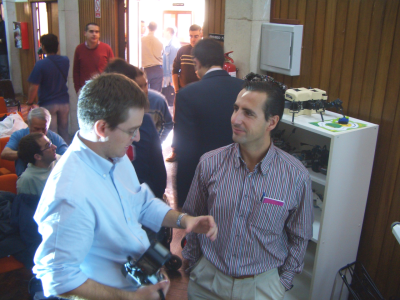
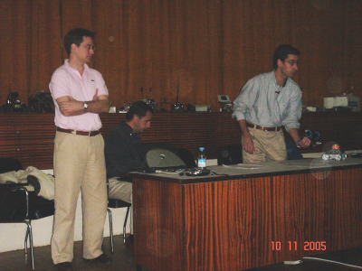
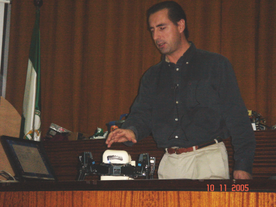
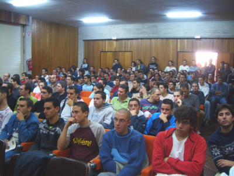
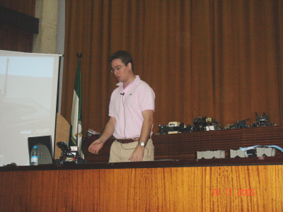
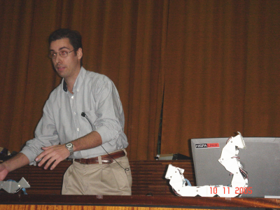
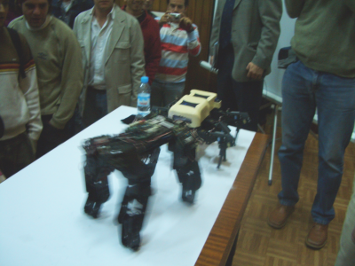
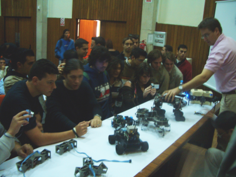

|
"Demostraciones de Robots articulados”. II Semana de la ciencia y la tecnología. UCA. Cádiz. Nov. 2005 |
|
 |
Título: “Demostraciones de Robots articulados”
Duración: 1 hora
Evento: II Jornadas de robótica. Semana de la ciencia y la tecnología. UCA.
Organiza: Asociación de Microbótica (AMUCA) y Escuela Superior de Ingeniería de la Universidad de Cádiz
Lugar: Escuela Superior de Ingeniería de la Universidad de Cádiz
Fechas: 10 de Noviembre de 2005
Ponentes:
En esta charla se hacen demostraciones de diferentes tipos de robots. Se comienza por los robots con ruedas, que son los más sencillos. Primero se enseña el Skybot, el robot “hola mundo”, que es el empleado en los talleres de iniciación a la robótica. Se continúa con el Clónico, una versión del skybot que tiene una estructura mecánica mejorada. A continuación se pasa a los robots articulados, que tienen una mecánica un poco más compleja y que son más difíciles de programar. El primero es la Hormiga Benita, un robot hexápodo de 12 articulaciones, creada hace 10 años. Después se enseña a PuchoBot, un robot cuadrúpedo, que tiene en total 12 articulaciones y que se mueve de manera autónoma o se controla desde el PC. El tercero, Melanie III, es un robot hexápodo de tres grados de libertado por pata y más de 30 sensores. El siguiente tipo son los robots modulares, constituidos por la unión de módulos. La configuración más sencilla es Cube Revolutions, una cadena de módulos Y1, unidos con la misma orientación. Se mueve en línea recta mediante ondulaciones de su cuerpo. Estos módulos se pueden unir en otras configuraciones. Tres ellas se conocen con el nombre de Multicube. Se finaliza la demostración con un ejemplo de robot de exploración, Joshua, que dispone de una cámara orientable y que se controla dede el PC, permitiendo al operador telecontrolar el robot. En la demostración se proyecta en la pantalla lo que capta la cámara del robot.
En esta charla NO se utilizaron transparencias (por eso no están publicadas aquí). Sólo se hicieron demostraciones y se mostró en la pantalla el software que se utiliza para controlar los robots. También había una cámara de vídeo externa que enfocaba en todo momento a los robots y se mostraban por la pantalla.
Robot “hola mundo” Skybot
Robot Cuadrúpedo PuchoBot
Robot Hexápodo Melanie III
Información sobre los módulos Y1
Robot ápodo Cube Revolutions
En este enlace puedes acceder al cuaderno de bitácora completo.
En la foto de la izquierda están Andrés y Alejandro conversando, el día anterior a la demostración de robots. En la derecha está Juan González Gómez junto a todos los robots que se mostraron en la demo.
|
 |
|
En la izquierda está Alejandro explicando y haciendo una demostración de Melanie III. En la derecha los asistentes a la charla. El salón de actos estaba hasta los topes.
|
 |
 |
En la foto de la izquierda podemos ver a Andrés haciendo la demostración de Joshua, el robot de exploración telecontrolado desde el PC. En la derecha estoy yo haciendo una demo de Cube Revolutions.
|
 |
 |
Una demo muy divertida es en la que se “enfrentan” PuchoBot y Melanie III. A la gente le gusta mucho la sangre :-) (Foto de la izquierda). Al finalizar la demo, los asistentes pudieron ver de cerca todos los robots, así como sacar fotos (Derecha).
|
 |
 |
A Arturo Morgado por habernos invitado una vez más a participar en las jornadas. ¡Muchas gracias!
29/Enero/2006: Publicada primera versión de esta página